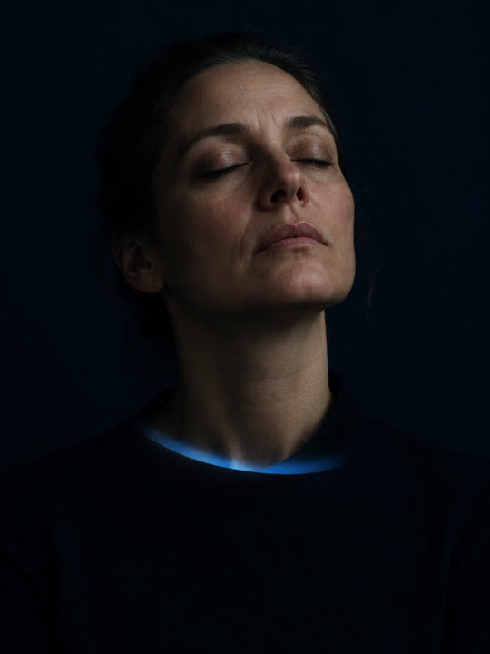

ANA Core
6 weeks- Ideal for
- Individuals carrying sustained load who need stability restored quickly.
- Focus
- Bioenergetic stability and nervous system regulation.
- Outcome
- A regulated baseline and a repeatable daily operating state.
Background film: a close portrait, lit by slow ribbons of blue and lavender light moving across the frame. The film is silent and decorative.
Neural Architecture
ANERVA trains the brain–body system for stability, clarity, self-regulation and adaptive performance under real-world demand.
A developmental and performance system. Not therapy. Not medical treatment.
Consent first, then the questions. No account. No app.
The difference is often revealed in the effort, rigidity, and recovery cost required to sustain it.
The problem

Not therapy. Not coaching. Not motivation. Not meditation alone. Each of these addresses a single layer. ANA addresses the relationships between layers, which is where the pattern is actually held.
Four functional domains
A domain describes where usable capacity is currently constrained — never a diagnosis, identity or personality type. ANERVA uses a proprietary, non-diagnostic category and Operating Mode framework.
Program pathways
What we know, and what we do not
ANERVA is developmental and performance-oriented. It is not psychotherapy, psychiatry, counselling or a mental-health crisis service. It is not medical diagnosis or treatment, and it is not a substitute for a licensed clinician. It is not a personality test that permanently categorises a person.
ANERVA may support people who experience stress, overwhelm, fatigue, reactivity or impaired focus. Its role in that is training and developmental support, not treatment of those conditions.
Adults only. Exclusion is not a judgement of worth. Referral is an act of care.
The seven categories and eight modes are proprietary ANERVA constructs, and their practical usefulness does not permit us to present them as validated scientific types. Change timelines vary widely between individuals, which is why we measure at week 0 and again at weeks 6 and 12.
ANERVA is not a crisis service and is not monitored live. If you are at immediate risk, or something needs urgent medical or psychiatric attention, contact your local emergency services or a qualified clinician.
Apply
Applications are reviewed individually to understand fit, readiness, goals, and relevant participation boundaries. The application is not a diagnosis and does not guarantee enrolment. If there is a suitable pathway, the ANERVA team will contact you with the next step.
This site is not monitored live. Applications are read during business hours, IST.